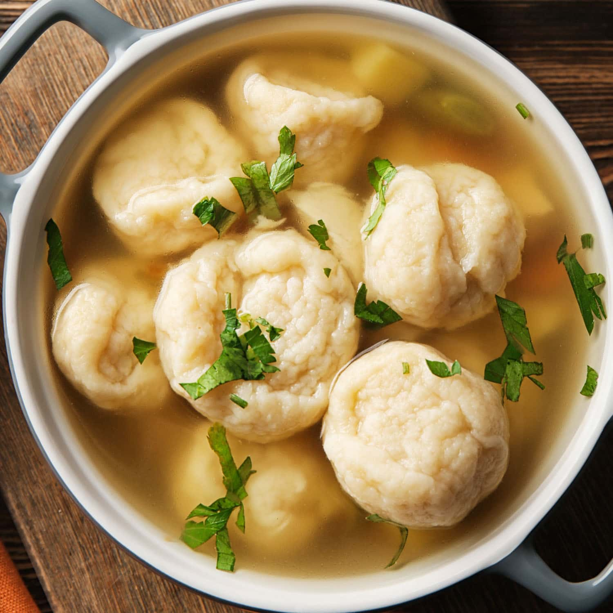

Recipe for Homemade Dumplings

How to make Homemade Dumplings
My mother was one of the best cooks I ever knew. Whenever she made stews we mostly found homemade dumplings in them. We never ate things from packages or microwaves and you sure could taste what food was. That's the only way I cook today - I don't use any electronic gadgets to cook with except an electric stove.